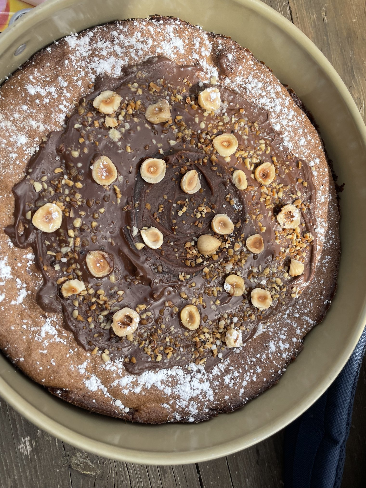

Pastel de avellanas y chocolate (moelleux noisette)
Ingredientes
8×
- 150 g de crema de cacao para untar
- 1 huevo
- 3 yemas
- 140 g de azúcar
- 250 g de avellana molida
- 5 g de levadura química
- 3 claras
- crema de cacao
- avellanas tostadas
- azúcar glas

Preparación
Paso 1
Unas horas antes, extender 150 g de crema de cacao para untar sobre papel de horno en un círculo algo más pequeño que el molde (18-20cm) y congelar.
Paso 2
Batir 1 huevo y 3 yemas con 70 g de azúcar hasta que blanquee. Añadir 250 g de avellana molida y 5 g de levadura química.
Paso 3
Montar 3 claras a punto de nieve añadiendo poco a poco 70 g de azúcar. Incorporarlas con cuidado a la primera mezcla con una espátula.
Paso 4
Verter la mitad de la masa en el molde engrasado y enharinado, colocar el disco de crema de cacao congelado y cubrir con el resto de la masa.
Paso 5
Hornear a 180ºC unos 45min. Dejar enfriar, desmoldar y decorar con un poco de crema de cacao, avellanas tostadas y azúcar glas.